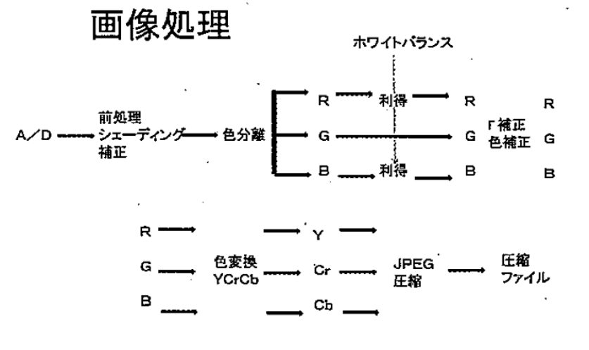

- 講師：相澤清晴
- 参考書：CG-ARTS協会発行「ディジタル画像処理」
- 参考書：R. Szeliski, Computer Vision Algorithms and Applications, Springer (PDF版はインターネット上で無料公開)
講義内容（相澤先生）
- 入力・カメラ系：デジタルカメラでの撮像過程
- 表色系
- フィルタリング・画像復元
- 特徴抽出(Global features, Local features, Deep features)
- 画像符号化
デジタルカメラ系
- ポイントは、「空間方向の標本化」 と 「色信号の量子化」
- 人間の眼と電子の眼の ダイナミックレンジ は、
- 人の視覚：8桁（星空〜太陽光下）
- フィルム：4桁
- CCD,CMOS：3桁
デジタルカメラ構造
CMOSセンサー・CCDセンサー
- CMOS(Complementary Metal Oxide Semiconductor・相補性金属酸化膜半導体)センサーは、CCD(Charge-Coupled Device)センサーと同じように、光を感じて電気信号に変える半導体センサーである。
- CMOSセンサーには 受光素子と電気信号を増幅するアンプがたくさん並んでついている ため、CCDセンサーに比べて低い電圧で動作し、読み出しを高速化することが容易である。
- More: キヤノン：技術のご紹介 | サイエンスラボ CMOSセンサー
デモザイキング
- 単板式（↔︎3板式）カメラは画素ごとに「R・G・B」のどの色を読み取るかが決まっており、その並び方をベイヤー配列と呼ぶ。
- この場合、欠損した画素値を補完する必要がある。
- このような画素ごとに色チャネルが異なる1枚のグレースケール画像（モザイク状のカラー画像）から1枚のRGBカラー画像を再構成する処理を（カラー）デモザイキングと呼ぶ。
- 周囲の色情報から線形補完するバイリニア補間や、エッジの方向を判別して、滑らかに変化する方向のが措置だけを用いて補完するエッジセンシング補完などがある。
3板式
- ダイクロイックプリズムを用いて入射光を3つの波長帯域に分解して、それぞれを専用の撮像素子で撮像する。
- 最初の反射面は青の波長帯域だけを反射して残りの波長帯域は通過、次の反射面は赤の波長帯域だけを反射して緑の波長帯域を通過、といった感じ。
- 高画質なカラー画像を撮影できるが、レンズ光学系と撮像素子の間にダイクロイックプリズムを配置する必要があることと、3つの撮像素子が必要なことから、コストやカメラサイズの面では不利な場合もある。
- 放送や取材などのための業務用のカメラではこちらが使われる。
コントラストAF
- コントラストは、「画像のヒストグラムの分布の広がり」 のこと。画素値の最大値を \(I_{\max}\)、最小値を \(I_{\min}\) とすると、以下のような求め方がある。
$$\begin{cases}\begin{aligned}C_1 &= I_{\max}-I_{\min}\\C_2 &= \left(I_{\max}-I_{\min}\right)/\left(I_{\max}+I_{\min}\right)\end{aligned}\end{cases}$$
- いずれの求め方でも画像中に1画素でも極端に大きな（小さな）画素が含まれると、画像全体から受ける印象は同じにも関わらずコントラストが異なってしまう。このため、頻度が一定値よりも小さな画素値を考慮しない などの工夫がある。
- コントラストAF(Auto Focus)は、撮像素子に映った映像をもとに、ピントレンズを動かしながら 明暗差（コントラスト） が大きなところを探してピントを合わせる方式。
- 撮像素子とAF用センサーを兼用できるのでカメラ本体の 小型化が可能 となるため、コンパクトデジカメで広く使われる方式である。（スマホでも使われている。）
- レンズを動かして （フォーカスを動かしながら） AFエリアの輝度を把握しないといけないので、後述の位相差AF方式に比べて、ピント検出に時間がかかる
位相差AF
- 位相差AFは、レンズから入った光を2つに分けて専用のセンサーへ導き、結像した2つの画像の間隔からピントの方向と量を判断する方式。
- コントラストAFに比べると、レンズを動かしながらピントを探る必要がないので 高速にピント合わせを行うことができる。
- 専用センサーとレンズから入った光を撮像素子と専用センサーへ分岐させる仕組みが必要となるために カメラ本体の小型化が難しい。
AE&AGC
- AE: Auto Exposure.自動露出。露出（絞り値とシャッター速度の組み合わせ）を自動で決定する機能のこと。
- AGC: オートゲインコントロール(Auto Gain Control)。撮影場所が薄暗い場合などに、光を増幅し、明るい映像に調整する機能。この値を大きくすればするほど、より暗い場所を明るく撮影できるが、その分ノイズが増える。
画像処理

\(\gamma\) 補正
- デジタル画像を表示する際、それぞれに色情報の伝送を行いますが各機器には固有の発色特性があり、入力された色情報をそのまま表示することが出来ない。
- このとき生じる誤差を \(\gamma\) 特性 と呼び、画像を自然の色に近くなるよう輝度や彩度の誤差を修正する機能を \(\gamma\) 補正 と呼ぶ。
AWB（オートホワイトバランス）
- 異なる照明下でも、白が白に写るような色の調整、赤と青の利得調整をすることが多い。
- 照明とカメラの温度関係によって、画像に青みがかかったり、赤みがかかったりする。
- 白い対象を写し、白と見えるようにバランス調整を行う。
- あらかじめ、白熱灯、蛍光灯、太陽光などの何種類かの補正係数を求めておき、切り替えて使う。
- 心理学の世界では灰色世界仮説というものもある。
- 非常に難しい。綺麗に解決できれば有名になれるXD
AS（オートスラビライゼーション）
- 手ぶれ補正
- 揺れの検出：
- 映像〜動きベクトル
- センサ〜角速度ベクトル
- 揺れの補正：
- 映像の切り出し
- 可変頂角プリズム（光軸の変化）
- 撮像デバイス駆動